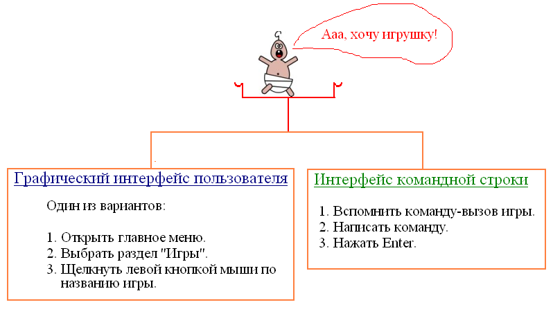

Работа в режиме командной строки Linux. Цикл уроков по информатике
Цикл уроков "Работа в режиме командной строки Linux" ориентирован на начинающих пользователей Linux и знакомит с основными принципами работы в режиме командной строки.
Дается определение интерфейса командной строки, описывается оболочка bash и основные принципы работы в ней; даются представления о параметрах команд, справочной системе, навигации и управлении файловой структурой.
Место данных уроков в составе образовательной программы дополнительного образования детей "Лаборатория юного линуксоида" — начало второго года обучения.
СLI – интерфейс командной строки
Методическая разработка урока по информатике
Цикл уроков по информатике: Работа в режиме командной строки Linux
Уровень: Linux для начинающих
Возможно, до сих пор, вы были знакомы с единственным видом взаимодействия (т.е. интерфейсом) между человеком и компьютером — GUI – графическим пользовательским интерфейсом. В этом случае команды компьютеру отдавались с помощью нажатий мышью на различные графические изображения на экране (кнопки, значки, пункты меню и др. картинки). На самом деле такие щелчки запускают различные системные программы, которые скрыты за графическим пользовательским интерфейсом.
Однако давать команды компьютеру можно не только с помощью разных кнопок и меню. Можно вызывать команды с помощью записи слова-вызова в специальной программе-интерпретаторе (переводчике) команд. Такой способ взаимодействия между человеком и компьютером называется интерфейсом командной строки (CLI – command line interface). Следует отметить, что в компьютерной истории командная строка появилась намного раньше, чем графический интерфейс.

Проанализируйте схему, а затем попытайтесь ответить на вопросы:
- Совсем неподготовленный пользователь садится за компьютер. В каком интерфейсе он сможет хоть как-то освоится без посторонней помощи и литературы, используя древний метод научного тыка: в графическом или командной строке? Почему?
- Допустим в операционной системе реализована возможность архивировать файлы. Однако фирма-разработчик забыла сделать кнопку запуска для данной программы. Как теперь воспользоваться системным архиватором? Какой интерфейс (графический или командная строка) открывает большие возможности при работе с компьютером?
В операционной системе Linux наиболее распространенной программой, обеспечивающей пользователю интерфейс командной строки, является bash. Программы подобные bash называют командными оболочками, основное назначение которых интерпретация (на машинный язык) инструкций (строк), вводимых человеком.
В Linux доступ к командной оболочке осуществляется через программу-консоль или эмулятор терминала. Запуск консоли можно осуществить через главное меню, а для перехода в терминал следует нажать комбинацию клавиш Ctrl+Alt+F1 (вместо единицы могут быть числа до 6). В любом случае вы увидите однотонный черный (или другого цвета) экран (в случае консоли: часть экрана), вверху которого будет так называемое приглашение.
В отличие от запуска программы-консоли, переход в терминал совершает с экраном что-то глобальное. Мы оказываемся в совершенно другой среде — текстовой. Здесь абсолютно нет графики, к которой мы привыкли в графическом интерфейсе, а мышь оказывается достаточно бесполезным существом: все манипуляции совершаются с помощью команд, набранных с клавиатуры. Таким образом работали компьютерные специалисты еще задолго до появления графического интерфейса пользователя.
Откуда взялись такие понятия как "терминал" и "консоль"? Терминалами называли комплекты "монитор+клавиатура", удаленные от компьютера. Компьютер мог иметь определенное количество терминалов, подсоединенных к нему с помощью модемов или последовательных портов. Таким образом осуществлялся многопользовательский режим доступа к ресурсам компьютера. Терминальный доступ используется и по сей день, хотя компьютеры стали уже совсем другими. Консоль — это также комплект "клавиатура+монитор" (ввод+вывод), однако присоединенный непосредственно к компьютеру.
Несмотря на древность текстового метода взаимодействия с компьютером, он широко распространен и сегодня. Для этого есть причины, например:
- Командная строка обеспечивает более быстрый доступ к некоторым возможностям операционной системы, а иногда — это единственный способ запустить тот или иной процесс.
- Текстовый интерфейс менее требовательный к ресурсам компьютера, чем графический.
- Бывает, что графический интерфейс просто не нужен (например, на части серверов).
- Программируемость работы операционной системы и программ. Командная оболочка позволяет загружать файл с последовательностью команд и, затем, выполняет их. Т.е. от человека не требуется постоянного ввода команд.
Задание.
- Переключитесь в текстовый режим работы (например, Ctrl+Alt+F3).
- Вверху вы увидите приглашение для ввода логина (имени пользователя). Введите свой логин, нажмите Enter.
- Затем будет предложено ввести пароль. Введите пароль (он не отображается при вводе, поэтому может показаться, что вы ничего не вводите, но это не так), нажмите Enter.
- Далее вы должны увидеть пару строк сообщения (о времени входа и наличию писем) и приглашение примерно следующего формата [строка@строка ~]$.
Что это значит и как работать с командной оболочкой, разберем на следующем уроке.
Командная оболочка Linux. Введение для начинающих
Методическая разработка урока по информатике
Цикл уроков по информатике: Работа в режиме командной строки Linux
Уровень: Linux для начинающих
1 Консоль и терминал
Термины "консоль" и "терминал" связаны с историческим развитием компьютерной техники и близки по смыслу. Грубо говоря, оба понятия обозначают точку доступа человека к ресурсам компьютера, с той лишь разницей, что консоль находится непосредственно рядом с компьютером, а терминал на удаленном расстоянии. В настоящее время, в связи с повсеместным распространением персональных компьютеров, терминальный доступ не распространен. Несмотря на это, в операционных системах на базе ядра Linux (возможно и в других) реализована эмуляция (подобие) нескольких терминалов. И это не только дань истории, в большей степени в этом есть практическое значение.
В Linux терминал обеспечивает доступ к специальной программе — командной оболочке (чаще всего bash). Она занимается интерпретацией (переводом на машинный язык) команд пользователя. Почему "оболочка"? Наверное потому, что она как бы обволакивает операционную систему, позволяя человеку не вдаваться в подробности реализации функций системы, и, тем самым, облегчает работу.
Итак, через терминал (или консоль) мы получаем доступ к командной оболочке.
В операционной системе Linux работать с командной оболочкой можно двумя способами: в графическом режиме и текстовом.
Запустить эмулятор терминала в среде KDE (часто тут употребляют название "консоль") можно через главное меню. Для работы в текстовом режиме следует выполнить комбинацию клавиш Ctrl+Alt+F1 (или Ctrl+Alt+F2, или Ctrl+Alt+F3, или Ctrl+Alt+F4, или Ctrl+Alt+F5, или Ctrl+Alt+F6). Комбинация клавиш Ctrl+Alt+F7 переключает экран в графический режим. Другими словами, в Linux эмулируется семь терминалов.
2 Работа с нескольких терминалах и вход в систему
Когда операционная система (Linux) загружена, то работать с ней могут только люди, с которыми система "знакома". Для начала работы человеку нужно войти в систему ("сказать" ей кто он и подтвердить, что это действительно он).
В графическом режиме мы обычно видим красочное окно для входа (хотя говорят, что лазить в окна плохо, поэтому возможно - это дверь), в которое вводим свой логин (электронное имя) и пароль (электронный паспорт, удостоверяющий личность). Теперь, если мы захотим работать с командной оболочкой в графическом режиме, то запустим программу под названием "Консоль" (возможно в названии будет значиться слово "Терминал") и сразу увидим так называемое приглашение оболочки.
Если же мы переключаемся в текстовый режим работы (например, нажав Ctrl+Alt+F3), то первое, что мы увидим будет далеко не приглашение, а текстовое требование на ввод логина и пароля. Зачем, ведь мы уже вошли?! Вспомним, что Linux эмулирует работу нескольких терминалов, а терминал с древних времен — это удаленная точка входа (кстати, мобильник - это тоже терминал доступа, только к другой системе). Можно представить, что мы не нажимали Ctrl+Alt+F3, а пошли пообщаться в другое помещение, но так и остались там. Однако работа не дремлет, поэтому пришлось сесть за тамошний терминал (клавиатура+монитор), соединенный с нашим компьютером. Как операционная система должна определить, что это вы вернулись, а не сел другой человек (возможно с неадекватными целями). Системе ничего не остается как снова спросить логин и пароль. Конечно, установка в здании множества терминалов, чтобы кому-то там было удобно работать с компьютером из любой точки — бред (особенно для 70-x годов XX века). Множество терминалов было вынужденной мерой того времени, т. к. компьютер нужен был многим, но стоил он очень дорого и был слишком громоздким. Поэтому доступ множества людей к одному ресурсу через терминалы был выходом, т. к. создавалось впечатление что у каждого есть свой компьютер. Говорят, что некоторые граждане роняли фразы типа "Опять монитор повис!"; возможно они думали, что все вычисления творятся в мониторе (ну не в клавиатуре же).
Теперь обратим внимание на следующее: с компьютером работают разные люди одновременно. У каждого есть свой логин и пароль, каждый запускает свои программы и процессы. (Если бы все входили с одного логина, то это создало бы проблемы с безопасностью.) Это важно: операционная система поддерживает многопользовательский режим работы с компьютером, кроме того создается впечатление, что процессор выполняет множество разных задач параллельно (одновременно).
Хотя терминалы сейчас заменены персональными компьютерами, в операционной системе (Linux) наличие нескольких терминалов может иметь практическое значение. Например, человек работает в одном виртуальном терминале, а параллельно в другом запущен процесс архивации данных (хотя можно делать все в одном, но иногда работа в нескольких терминалах бывает удобней — так легче следить за тем, что происходит).
Итак, вернемся к тому с чего начали. Переключившись в текстовый режим мы увидим приблизительно следующее: приветствие, название дистрибутива, дата его выпуска, текущий терминал (tty2). Во второй строке — имя компьютера в сети (в данном случае five) и предложение ввести логин.
Следует снова ввести логин и пароль. Ввод пароля не отображается (в целях безопасности). Далее вы должны увидеть что-то вроде этого:
В первой строке сообщается когда и где был последний вход (в данном случае с терминала ":0" - это графический режим). Во второй строке — сообщение о том, что пользователь имеет письмо в папке /var/mail/pupil6. Далее — приглашение командной оболочки.
3 Структура приглашения и текущий каталог
[pupil6@six ~]$ - это приглашение командной оболочки. Но это не просто "здрасьте", оно несет в себе информацию об имени пользователя (pupil6), имени компьютера (six) и текущем каталоге (~). Тильда (~) обозначает домашний каталог.
Еcли на том же компьютере зайдет другой пользователь, то изменится первая строка (до знака @), при работе на другом компьютере изменится также строка после @. А если поменять текущий каталог, то знак тильды будет заменен на имя нового текущего каталога. Примеры приглашений командной оболочки: [test@six Documents]$, [YaKreveDko@five ~]$ и т. д.
Текущий каталог — это каталог, в котором мы как бы находимся.
4 Примеры простейших команд
Какие же команды существуют? Для чего они и как их отдавать? Команд множество, они позволяют выполнить прикладные задачи (получать информацию, работать с текстом, программировать и др.), управлять операционной системой и компьютером (железом).
Чтобы выполнить команду ее надо записать после приглашения и нажать Enter. Например, если захочется узнать, сколько времени, то следует записать слово date (от англ. "дата") и нажать Enter. В итоге получим сообщение о сегодняшней дате и текущем времени.
ls выдает содержимое текущего каталога (т. е. список файлов и папок каталога, в котором мы находимся).
Команда who выдает список находящихся в системе пользователей.
В данном случае в системе работает один пользователь, но с двух терминалов (tty2 и :0). А вот в примере ниже уже два пользователя (test и pupil6).
date, ls и who - это примеры очень простых команд. На самом деле большинство команд состоят не из одного слова, а имеют параметры. Пока оставим это до следующего урока.
Еще один момент. Если написать строку, которая не является командой, то оболочка сообщит, что "команда не найдена".
5 Практическая работа
- Зайдите в операционную систему в графическом режиме, затем с двух терминалов, работающих в текстовом режиме.
- Выясните сколько пользователей работают в системе и где.
- Узнайте содержимое текущего каталога, работая в текстовом режиме. Переключитесь в графический режим и удостоверьтесь в правильности ответа командной оболочки.
- Дайте команду date два-три раза с небольшим перерывом между вызовами. Отметьте изменение времени.
- Спросите у оболочки чая (tea). Что она вам ответит?
6 Вопросы
- Что такое терминал?
- Сколько терминалов эмулируется в Linux? Какие комбинации клавиш позволяют переключаться из одного терминала в другой?
- Может ли один человек работать с двух терминалов?
- Могут ли два человека одновременно работать с одного терминала?
- Могут ли два человека одновременно работать с двух терминалов?
- Как получить доступ к командной оболочке? Зачем к ней получать доступ?
- Какие команды оболочки bash вы знаете?
Параметры команд bash-оболочки Linux
Методическая разработка урока по информатике
Цикл уроков по информатике: Работа в режиме командной строки Linux
Уровень: Linux для начинающих
Зачем нужны параметры?
Большинство команд, которые дают в оболочке Linux, состоят не из одного слова (сокращения слова). Чаще команды дополняются специальными параметрами (аргументами и ключами). Таким образом происходит конкретизация и модификация команды. Если провести аналогию между поведением командной оболочки и поведением человека, то можно сказать, что для человека слово "иди" - это команда, а слова "на остановку" - это параметр. Параметры позволяют более точно сформулировать то, что мы хотим.
Например, команда cal без параметров выдает календарь на текущий месяц.

Однако может потребоваться получить календарь на весь год. Тогда следует дать команду cal 2009. В данном случае "2009" - это аргумент (операнд). Кроме того, можно получить календарь абсолютно любого месяца; в этом случае команде передаются два аргумента: номер месяца и год.

Обратите внимание, что в ответе командной оболочки неделя начинается с воскресенья. Это как-то не по русски. Для того, чтобы неделя начиналась с понедельника необходимо использовать ключ (опцию) -m (от англ. Monday – понедельник). Ключи предназначены для изменения поведения команды.

Команда echo
Команда echo (эхо) выводит строку, переданную ей в качестве аргумента. Если написать команду без параметра, то она выдаст пустую строку.

В последнем вызове команды используется ключ -n, который запрещает переход на новую строку, поэтому приглашение командной оболочки выводится в той же строке, что и вывод команды echo.
Параметры команды ls
Рассмотрим некоторые ключи и параметры уже знакомой нам команды ls, которая выдает список файлов и папок текущего каталога (однако, как мы узнаем далее, не обязательно текущего).

Если команду ls использовать с ключом -l, то вывод будет более информативным.

В первой строке (итого 17736) содержится информация об общем размере всех файлов в списке. Далее в каждой строке сообщается о правах доступа к файлу, количестве ссылок на файл, имени владельца, имени группы, размере, времени последнего изменения и имени (файла или каталога). При добавлении ключа -t произойдет сортировка по времени. Ключи записываются друг за другом.
Команда ls часто применяется для просмотра содержимого разных каталогов файловой структуры. Для этого следует уметь адресовать команду к конкретному каталогу, т. е. передать интересующий нас каталог в качестве аргумента команде ls. Пока оставим адресацию в командной строке на потом и просто просмотрим содержимое каталога, который находится в текущем (домашнем каталоге). Например, чтобы узнать что находится в каталоге Desktop, следует написать ls Desktop и нажать Enter.

Команда sleep
До сих пор мы рассматривали команды, которые можно использовать без параметров. Однако существует ряд команд, которые без переданных им аргументов теряют всякий смысл и поэтому требуют обязательного наличия аргумента. Одной из таких команд является sleep (сон). Эта команда заставляет оболочку bash выполнить задержку перед следующей командой. А параметр, передающийся sleep, указывает какую именно задержку (сколько секунд, минут и т. д.). При интерактивной работе с bash данная команда особого смысла не имеет; однако часто для командной оболочки пишут сценарии (файлы с командами), и вот там иногда требуется выполнить задержку.

В приведенном примере сначала команда записана без аргумента, поэтому получено соответствующее сообщение. Далее два вызова делают одно и тоже (задерживают на 3 секунды). Если вместо суффикса s использовать m, то задержка будет измеряться в минутах.
Вопросы
- Для чего необходимы параметры к командам?
- Что передается в качестве аргумента команде cal? Как можно модифицировать выполнение этой команды?
- Что делает команда echo?
- Что следует записать в командной оболочке, чтобы получить данные о файлах (правах, размере и др.) текущего каталога?
- Стоит ли писать sleep 1000m в командной оболочке Linux, если вы не знаете как прервать выполнение команд?
Практическая работа
- В командной оболочке Linux выведите календарь на текущий месяц, затем на целый год и на любой нетекущий месяц.
- "Заставьте" командную оболочку Linux повторить введенную вами строку.
- Получите сведения о файлах вашего домашнего каталога.
Как работать в командной строке Linux
Методическая разработка урока по информатике
Цикл уроков по информатике: Работа в режиме командной строки Linux
Уровень: Linux для начинающих
1 прерываение
Помните команду sleep из предыдущего урока? Если ввести что-то наподобие sleep 100, то может понадобиться прервать выполнение команды. Сделать это можно с помощью сочетания клавиш Ctrl + C. Есть много процессов командной оболочки, прерывание которых обеспечивается сочетанием клавиш Ctrl + D или Ctrl + C или Ctrl + Z.
Другой пример, где может понадобиться прерывание, — это команда cat. Когда она используется без параметров, то выводит на экран то, что вводит пользователь.
2 история команд
Работая в командной строке, очень часто требуется повторить ранее введенную команду. Набирать ее снова не слишком рационально. Для повтора ранее введенных команд в командной оболочке Linux возможна прокрутка команд с помощью стрелок вверх и вниз на клавиатуре. Происходит прокрутка команд назад или вперед. Когда появится нужная команда следует нажать Enter и команда будет повторена. Понятно, что при этом можно видоизменить команду (например, изменить параметр).
3 автозавершение
Автозавершение позволяет при нажатии определенной клавиши автоматически дописывать начатую команду. Это очень удобное свойство командной оболочки, т.к позволяет не знать команды и параметры наизусть и экономит время при вводе. Автозавершение в командной оболочке Linux срабатывает при нажатии клавиши Tab (табуляция). При этом автозавершение сработает лишь в том случае, если команда (параметр) определяется однозначно.
Например, для просмотра содержимого рабочего стола не обязательно писать ls Desktop. Достаточно написать ls De и нажать клавишу Tab — оболочка допишет слово сама. Однако если написать ls D и нажать Tab, то ничего не произойдет, т. к. обычно в домашнем каталоге пользователя есть два каталога, начинающиеся с буквы D, и какой из них имеется ввиду командная оболочка определить не может.
Бывает что мы не знаем что вводить далее после нескольких букв и командная оболочка после одиночного нажатия клавиши табуляции ничего не дополняет. В таком случае может помочь двойное нажатие Tab, после которого на экране появляется перечень всех возможных вариантов. Например, мы можем забыть как правильно писать команду echo. Но если введем букву e и нажмем два раза Tab, то увидим перечень команд, в котором можем узнать требуемую нам команду.
Тоже самое можно использовать в случае ls D. В этом случае выведется список каталогов, начинающихся с буквы D.

4 ctrl + u
Ctrl + U отменяет введенную в текущей строке команду. Если команда длинная, то использовать Ctrl + U куда удобнее, чем стирать буквы по порядку с помощью клавиши Backspace.
Есть и другие сочетания клавиш, облегчающие работу с командной строкой (например, Ctrl + W – удаление слова).
5 ввод данных в файл и вывод из файла
Когда мы работаем в командной оболочке, то работаем в интерактивном режиме: спрашиваем и получаем ответ. При этом ответы оболочки не сохраняются, но что делать, если результат работы команды требуется сохранить? На этот случай командная оболочка поддерживает такие функции как перенаправление стандартного ввода и вывода. Ввод можно направить не на экран, а в файл.
Аналогично, данные можно ввести не с помощью клавиатуры, а получить из файла.
Перенаправление осуществляется с помощью знаков < и >. Угол указывает куда направить, а обратная сторона (широкая) — откуда взять. Например, команда cat > fileX запишет все, что введет пользователь в процессе работы программы cat, в файл с именем fileX. А вот команда cat < fileY сделает обратное — выведет на экран содержимое файла fileY.
Рассмотрим пример более практического использования перенаправления. Допустим нам надо оставить на потом сведения о содержимом домашнего каталога. Для этого мы перенаправим вывод команды ls в файл (например, ls > myhome). Еще хорошо бы, чтобы в этом файле содержалась дата когда был взят этот "срез". Для этого допишем в файл результат команды date, которая позволяет получить дату и время (date >> myhome). Обратите внимание, что для дополнения файла используется два знака >; если использовать один знак, то произойдет перезапись (старые данные сотрутся и заменятся новыми). Теперь предположим, что через какое-то время потребовалось узнать, что же было в папке ранее: для этого достаточно выполнить команду cat < myhome.
вопросы
- Как прервать выполнение какой-либо команды?
- Каким образом можно просматривать ранее введенные команды?
- Что такое автозавершение? Как им пользоваться в командной оболочке bash?
- Для чего предназначена комбинация клавиш Ctrl + U?
- Что произойдет в результате выполнения следующих команд: cat > text333, cal > yest, date >> yest?
практическая работа
- Выполните в командной оболочке bash команду cat без параметров. Введите несколько строк, а затем прервите выполнение данной команды.
- Выполните в командной строке несколько команд, которые вы знаете. Повторите некоторые из них без записи самих команд.
- Напишите в командной строке ls -l Do, нажмите Tab, затем Enter. Объясните поведение оболочки.
- Узнайте какие команды есть на букву z.
- Создайте файл, содержащий сведения о вашем имени, фамилии и возрасте. Выведите содержимое этого файла на экран.
Документация Linux
Методическая разработка урока по информатике
Цикл уроков по информатике: Работа в режиме командной строки Linux
Уровень: Linux для начинающих
man и info
Выполняя ту или иную команду в bash-оболочке, мы запускаем какую-либо программу. Количество этих небольших программ-утилит в операционных системах на базе ядра Linux очень большое. В связи с этим невозможно запомнить весь перечень команд с их параметры. Поэтому каждая команда в Linux имеет описание в виде так называемых man-страниц. Man (в данном случае) – это сокращение от слова manual (руководство).
Чтобы посмотреть документацию к той или иной программе (команде) необходимо в оболочке Linux написать man имя_команды. Например, если дать команду man sleep, то увидим справочную информацию по команде sleep.

Поскольку команда sleep весьма специфична, то имеет достаточно короткое описание. На самом деле большинство man-документов не умещаются в пределах экрана. Для их просмотра можно использовать следующие клавиши:
Стрелки вверх и вниз – построчная прокрутка;
Page_Up и Page_Down – постраничная прокрутка;
Home и End – перемещение в начало и конец документа.
Покинуть руководство позволяет клавиша Q.
Следует отметить, что все man-документы написаны на английском языке и лишь малая доля переведена (локализована). Выход тут один – учить английский.
Помимо man-страниц есть другая версия документации – это info-страницы. В отличие от первых они не являются строгой документацией, их легче понять начинающим пользователям Linux, могут содержать примеры и ссылки. Ниже представлен info-документ команды sleep (info sleep).
структура man-страниц
При первом взгляде на man-документ его бывает трудно понять, т.к. он не похож на простой текст-объяснение (он им и не является). Маны всегда строго структурированы и разбиты на разделы. Некоторые из разделов присутствуют обязательно, другие по необходимости:
- NAME (ИМЯ) – команда и то, что она делает.
- SYNOPSIS (ОБЗОР) – синтаксис команды. Параметры без скобок являются обязательными, а в квадратных скобках – нет (обычно это ключи).
- DESCRIPTION (ОПИСАНИЕ) – подробное описание как использовать команду.
- OPTIONS (ОПЦИИ) – перечень возможных ключей и их описание.
- ...
как найти команду?
Может возникнуть ситуация, когда требуется выполнить какую-нибудь задачу, а как ее выполнить не знаешь. Всегда можно предположить, что такая задача возникала перед другими людьми ранее и, возможно, уже создана программа (утилита) решающая ее. Следовательно, в bash-оболочке Linux есть команда, позволяющая выполнить возникшую задачу. Но как найти эту команду? Может быть мы даже готовы почитать маны про эту команду, но не знаем и с какой буквы она начинается. Что делать? Книги и Интернет? Однако есть еще один вариант - это команда apropos. Она выводит на экран описание команд, содержащих слово, переданное ей в качестве аргумента. Допустим возникла потребность объединить пару файлов. Чтобы узнать какими способами это можно сделать, достаточно дать команду apropos объедин (окончание недописано, т.к. неизвесто как слово "объединение" используется в описании команды – может быть и "объединяет" и "объединяюся" ...).
Полученный список позволяет оценить, какая команда больше всего нам подходит. Но это только полпути: далее следует почитать man-страницу к данной команде, чтобы выяснить, как ее следует использовать. Только вот одно существенное примечание: аргумент команде apropos мы передали на русском языке, поэтому поиск осуществлялся только в части документов (причем довольно малой). Обычно следует использовать русские и английские слова, чтобы найди требуемую команду.

И еще одно примечание: для поиска команд вместо аpropos можно использовать man с ключом -k (man -k строка) – будет тоже самое.

практическая работа
- Выясните, для чего предназначена команда cat. Используя данную команду, создайте два файла с данными, а затем объедините их в один.
- С помощью команды apropos найдите команду для удаления файлов. Прочитайте к ней man-документ. Удалите какой-нибудь файл.
- Дайте команду info bash. Прочитайте информацию о данном командном интерпретаторе. Если она на английском языке, переведите пару абзацев.
Абсолютная и относительная адресация. Команда cd
Методическая разработка урока по информатике
Цикл уроков по информатике: Работа в режиме командной строки Linux
Уровень: Linux для начинающих
Очень частой задачей в командной строке Linux является просмотр содержимого того или иного каталога. Для этого используется команда ls. Однако, используя данную команду без аргументов, можно увидеть содержимое только текущего каталога. Обычно в Linux по-умолчанию текущим каталогом является домашний каталог пользователя. Как быть, если требуется узнать содержимое других каталогов? Для этого в качестве аргумента команде ls следует передать адрес каталога.
Вспомним, что адресация бывает абсолютной и относительной. В случае абсолютной адресации путь к каталогу (или файлу) указывается, начиная с корневого каталога и далее вглубь по дереву папок до требуемого каталога. Например, все следующие записи являются абсолютными адресами:
/home/sv/Desktop
/boot
/etc/vim
Первый знак / (слеш) - это обозначение корневого каталога.
При относительной адресации путь к каталогу указывается, начиная с текущего каталога (другими словами, относительно текущего каталога). При этом используются следующие обозначения:
. или ничего - текущий каталог;
.. - каталог на уровень выше (родительский по отношению к текущему).
При относительной адресации нужно хорошо представлять картину взаимного расположения директорий.
Примеры относительных адресов:
./Documents/images/
Documents/images/
../test – в родительском каталоге по отношению к текущему есть папка test:
Уместность использования относительного или абсолютного адреса зависит от ситуации. Так, например, если требуется просмотреть корневой каталог, то проще написать / (т. е. абсолютный адрес); если необходимо узнать содержимое каталога, вложенного в текущий, то можно просто написать его название (относительная адресация).
Можно выделить еще один способ адресации — это адресация относительно домашнего каталога пользователя. Обозначается домашний каталог знаком тильды (~). Например, из любого каталога адрес ~/Documents, заставит обратиться в папку Documents, находящуюся в домашнем каталоге.
Пример просмотра различных каталогов с помощью команды ls:
Обратите внимание, на команду ls /. Она выдает список вложенных директорий корневого каталога. Для операционных систем на базе ядра Linux этот список относительно стандартен. Например,
root – это домашний каталог суперпользователя;
bin – содержит программы, необходимые во время старта системы, а также часто используемые команды;
boot – содержит файлы для загрузки и ядро операционной системы.
Использование адреса с командой ls – лишь частный случай. Например, можно направить вывод в файл в другой каталог, отличный от текущего:

Когда мы используем команду ls, то можем увидеть содержимое почти любого каталога, но не переходим в него (текущий каталог не меняется). Мы как бы смотрим из одного помещения в другое, оставаясь по-прежнему в первом. Однако бывают случаи, когда требуется изменить текущий каталог.
Для перемещения по дереву каталогов в командной оболочке Linux используется команда cd. В качестве аргумента передается адрес каталога, куда нужно перейти. Примеры:

Обратите внимание на изменения в приглашении командной оболочки. Теперь вместо знака тильды, который обозначает домашний каталог, появились названия каталогов куда был осуществлен переход.
Если требуется выполнить множество различных операций в какой либо папке, то лучше перейти в нее, чем пытаться манипулировать объектами из других каталогов. Это позволит не писать длинные адреса при обращении к объектам (каталогам и файлам).
Следует помнить одну полезную особенность — это автозавершение при нажатии клавиши Tab. Для адресов оно работает также как и при записи команд. Например, желая перейти из домашнего каталога на рабочий стол, достаточно набрать cd De, нажать Tab, затем Enter.
вопросы
- Как обозначается корневой каталог?
- Чем отличается относительная адресация от абсолютной? Приведите примеры адресов обоих типов.
- Что означают следующие записи: ls /, cd ../../, cd ~?
- Какую адресацию уместнее использовать в следующих случаях: переход из Desktop в каталог, вложенный в корневой; просмотр содержимого каталога, вложенного в текущий?
- Для чего предназначена команда cd?
- Как в командной оболочке Linux можно определить, какой каталог является текущим?
практическая работа
- Просмотрите содержимое нескольких каталогов, вложенных в корневой.
- Директория /home содержит домашние папки пользователей системы. Узнайте какие пользователи зарегистрированы в вашей операционной системе.
- Измените текущий каталог, а затем снова вернитесь в домашний.
Операции с файлами в командной строке Linux. Урок
Методическая разработка урока по информатике
Цикл уроков по информатике: Работа в режиме командной строки Linux
Уровень: Linux для начинающих
Работая в любой графической оболочке (например, KDE или Gnome) мы часто выполняем такие операции как копирование, перемещение, переименование объектов (файлов и папок), также создаем файлы и каталоги. Все это изменяет файловую структуру (по крайней мере, ее "пользовательскую" часть). Очевидно что подобные операции (копирование, перемещение и др.) должны быть предусмотрены и в командной оболочке Linux.
копирование
Для копирования файлов в bash используется команда cp (от "copy"– копировать), которая имеет два обязательных аргумента: имя (адрес) исходного файла и имя (адрес) создаваемой копии или адрес каталога, куда помещается копия.
Адрес может быть как абсолютным, так и относительным. Если операции с файлами выполняются в текущем каталоге, то адрес нет смысла указывать, а пишется только имя исходного файла и имя копии. При этом следует помнить, что файлов с одинаковыми именами и адресами не может быть, поэтому имя копии должно отличаться от имени исходного файла.
Рассмотрим несколько примеров.
В данном случае создается копия файла readme, которая остается в той же директории под именем readme2.
Создается копия на рабочем столе. Непосредственное имя копии в данном случае можно оставить прежним, т.к. полные имена (адрес + имя) файлов различны. Используется относительная адресация (каталог Desktop является дочерним по отношению к домашнему каталогу).
Здесь копируется файл из домашнего каталога пользователя irina в каталог D, используются абсолютные адреса, имя копии изменяется.
Чтобы скопировать каталог необходимо после команды cp прописать ключ r:
перемещение и переименование
Для перемещения и переименования в bash-оболочки Linux используется одна команда – mv (от "move" – перемещать). Также как и с командой копирования обязательно наличие двух аргументов, а выбор того или иного действия (перемещения или переименования) зависит от того, что это за аргументы. При перемещении файл меняет свой адрес, следовательно, если в первом и втором аргументах указаны различные адреса, то произойдет перемещение, если одинаковые (а различны только имена) – переименование.
В случае перемещения во втором аргументе может быть указан только каталог (перемещение без переименования), куда требуется переместить файл.
mv document.txt Work/doc23.txt
Здесь в первом случае файл document.txt перемещается в каталог Work, а во-втором случае одновременно происходит перемещение файла и его переименование: файл document.txt перемещается в директорию Work и получает новое имя doc23.txt.
При использовании команды mv для переименования в качестве второго аргумента указывается новое имя:
mv Work/list.odt Work/names.odt
создание файлов и каталогов
Новые директории создаются командой mkdir. Например, чтобы создать каталог Work в текущей директории необходимо выполнить следующую команду:
или
mkdir ./Work
Существует множество способов создания файлов. Один из них – это создание пустого файла с помощью команды touch. В качестве аргумента ей передается имя файла. Еще один способ – это перенаправление вывода какой-либо команды в файл. Пример:
Здесь команда cal выводит календарь на текущий месяц, а поскольку стоит знак ">" (в данном случае обозначающий "направить результат выполнения команды в ..."), то вывод команды будет записан в файл January, находящийся в папке Work.
удаление файлов и каталогов
Для удаления каталогов используется команда rmdir. Удалять можно только пустые каталоги, т. е. не содержащие файлов и поддиректорий (вложенных папок).
Для удаления файлов используется команда rm. Например:
Чтобы удалить не пустой каталог можно использовать команду rm с ключом -r. При этом при удаление каждого вложенного объекта будет требоваться подтверждения.
Однако если добавить еще ключ -f, то вопросов на подтвержение уже возникать не будет:
вопросы
- Для чего предназначены команды cp, mv, rm, mkdir, rmdir?
- Как скопировать каталог?
- Можно ли удалить не пустой каталог?
- В каком из приведенных ниже примерах происходит перемещение файла? его переименование? одновременно оба действия?
а) mv ./work/tech/comp.png ./work/tech/my_car.png
б) mv ./work/tech/comp.png ./Desktop
в) mv ./work/tech/comp.png ./work/tech/computer.png
практическая работа
- В домашней директории создайте каталог folder и переместитесь в него.
- Создайте в нем три файла любыми известными вам способами, а также вложенный каталог inside.
- Скопируйте один файл из каталога folder в каталог inside, а два оставшихся — переместите в inside. Файл, оставшийся в каталоге folder, переименуйте.
- Создайте копию каталога inside на рабочем столе (Desktop).
- Удалите каталог folder.
Виды ссылок в Linux. Теория
Статья
Цикл уроков по информатике: Работа в режиме командной строки Linux
Уровень: Linux для начинающих
что такое индексный дескриптор?
Мы знаем, что файл – это область данных на диске, которую можно найти по имени. Однако в операционных системах на базе ядра Linux вся информация о файле привязана не к имени, а так называемому индексному дескриптору. У каждого файла есть свой уникальный (единственный и неповторимый) индексный дескриптор, который содержит сведения о файле: в каких блоках диска хранится содержимое файла, размер файла, время его создания и др.
Пронумерованные индексные дескрипторы файлов содержатся в специальной таблице. Каждый логический и физический диск имеет собственную таблицу индексных дескрипторов.
Именно номер индексного дескриптора является истинным именем файла в системе.
Какие ссылки бывают жесткими?
Поскольку индексные дескрипторы представляют собой номера, а файлов в операционной системе обычно очень много, то искать файл по номеру его дескриптора очень неудобно: человеку работать с осмысленными словами куда удобнее, чем с огромными числами. Поэтому любому файлу в системе обычно дается осмысленное имя (обычно словесное), которое не содержит информации о файле, а лишь указывает (ссылается) на его дескриптор.
Имя файла, ссылающееся на его индексный дескриптор, называется жесткой ссылкой. Механизм жестких ссылок – это основной способ обращаться к файлу по имени в операционных системах, основанных на ядре Linux.
сколько имен у файла?
Файл в системе идентифицирует (определяет) номер его индексного дескриптора, а имя файла содержит лишь указатель на него. Естественно, что таких указателей можно создать множество, хотя все они будут направлять на один объект. Для образного сравнения, можно представить придорожные указатели на какую-нибудь бензоколонку: их много, они находятся в разных местах трассы, но указывают на одну и туже точку. Другими словами, у файла в Linux может быть несколько имен.
Но почему бывает недостаточно одного имени файла? Все дело в удобстве доступа (а также предоставлении доступа).
Например, человек работает над проектом и постоянно обращается к файлу, местоположение которого предусмотрено во вложенном каталоге. Чтобы открыть этот файл в графическом режиме, придется по крайней мере открыть последовательно два каталога. Но куда удобнее будет поместить еще одно имя файла на Desktop (Рабочий стол).
Или предположим такую ситуацию. Администратор системы (человек, управляющий операционной системой) в одном каталоге создал файл, доступ к которому должен быть обеспечен и рядовому пользователю. Однако открывать этот каталог пользователь не имеет права, а переместить файл в каталог пользователя тоже нельзя, т.к он необходим и в данном каталоге. В такой ситуации единственным выходом будет создать еще одну жесткую ссылку на файл и поместить ее в каталог пользователя.
Также, из механизма жестких ссылок вытекает и следующее утверждение: удаление одной жесткой ссылки на файл не приводит к его удалению их системы при наличии у него других жестких ссылок (имен). И это понятно, если учесть, что все жесткие ссылки равны между собой, независимо от времени создания, местонахождения в структуре каталогов и др. Файл будет доступен системе, пока будет существовать хоть одна жесткая ссылка на него. В случае удаления всех ссылок, файл удалится из системы, т.к. станет просто недоступен ей.
в чем "мягкость" мягких ссылок?
Несмотря на всю прелесть жестких ссылок, у них есть и ограничения: их можно создавать только на файлы, но не на каталоги. Также жесткую ссылку нельзя создать с одного диска на другой. Последнее означает, что нельзя создать жесткую ссылку на файл находящийся, например, на съемном носителе (дискеты, флэш-память, CD-R и др.) или другом разделе жесткого диска.
В такой ситуации на помощь приходят мягкие ссылки. Часто их также называют символьными ссылками. Они представляют собой файлы, указывающие не на индексные дескрипторы, а на имена файлов.
Следует понимать, что понятия жесткой и мягкой ссылки, несмотря на их созвучность, различны по сути. Жесткая ссылка указывает непосредственно на индексный дескриптор, а мягкая указывает на жесткую ссылку. Если удалить все жесткие ссылки файла, то ни одна мягкая ссылка "не сработает".

На рисунке изображена односторонняя связь между символьными ссылками и именами файла, а также между именами и индексным дескриптором. Верхний квадрат соответствует индексному дескриптору файла, квадраты со скругленными углами – именам файла, а круги – символьным ссылкам. Индексный дескриптор файла всегда один, а имен может быть множество. Также может существовать неограниченное количество символьных ссылок на каждое имя файла. При удалении жесткой ссылки, на имя которой имелась мягкая ссылка, последняя не наследует связь с дескриптором и утрачивает свою "работоспособность". Если в данном примере удалить жесткую ссылку с именем logotip, то файлы pic1 и tux станут бесполезны, т.к. открыть файл 555795 с их помощью уже будет нельзя. Такие ссылки часто называют "битыми".
ссылка – это не копия!
Кому-то может показаться, что копирование файлов и создание ссылок почти одно и то же, т.к. в итоге получаются вроде бы два файла. Однако это абсолютно разные операции, приводящие к совершенно разным результатам.
При копировании файла создается новый файл, данные которого записываются в свободное место на диске, и который имеет собственный индексный дескриптор. В случае же создания жесткой ссылки, файл по-прежнему остается в единственном числе, появляется лишь дополнительный указатель на него.
Практически это имеет следующие последствия. При внесении изменений в файл, обращение к которому было под одним именем, эти изменения обнаружатся и тогда, когда обращение к файлу произойдет под другим именем. При создании копии файла и последующем изменении данных этой копии, данные первоначального файла не изменятся.
В случае мягких ссылок, хоть и создается новый файл (с собственным индексным дескриптором), но он не содержит данных файла-оригинала, а лишь ссылается на жесткую ссылку.
Создание ссылок в Linux
Методическая разработка урока по информатике
Цикл уроков по информатике: Работа в режиме командной строки Linux
Уровень: Linux для начинающих
В командной оболочке Linux для того, чтобы добавить файлу еще одно имя (создать еще одну жесткую ссылку на файл) необходимо выполнить команду ln (от "link" - ссылка, связывать). В качестве первого параметра указывается существующее имя файла, второго - имя новой ссылки.
В данном случае, в текущем каталоге была создана еще одна жесткая ссылка на файл с именем file1. Созданная ссылка находится в том же каталоге, что и первая. Далее можно переместить ссылку в другой каталог при помощи команды mv.
Можно сразу указать место назначения ссылки с помощью адреса. Например:
ln /root/list /home/vasy/Desktop/l_class
В последнем варианте указаны полные имена исходного и нового имен файла.
Число жестких ссылок на файл (т. е. разных имен файла) можно узнать, выполнив команду ls с параметром -l, которая построчно выводит на экран подробные сведения о каждом объекте каталога.
В данном примере создаются две ссылки на файд cp_mv_7.odt: одна ссылка помещается в папку Documents, а вторая на рабочий стол. Далее выполняется команда ls по отношению к этим двум каталогам. Сразу за перечислением прав доступа (-rwxrwxrwx) к файлу следует число, которое и обозначает количество жестких ссылок на файл. В данном случае их три (не забывайте про ту, что была исходной). То, что все ссылки указывают на один и тот же файл, говорит идентичность информации о файле.
Символьную ссылку можно создать при помощи команды ln с ключом -s (от "symbolic"). В качестве первого параметра пишется АБСОЛЮТНЫЙ АДРЕС и имя исходного файла, в качестве второго – адрес и имя мягкой ссылки. Например:

В примере создана символьная ссылка на файл text, находящийся в каталоге Documents. Ссылка размещена на рабочем столе. При просмотре содержимого каталога Desktop, мы можем видеть, что файл link_text является символьной ссылкой на объект находящийся по адресу /home/sveta/Documents/text.
В отличие от жестких ссылок, символьные ссылки можно создавать и на каталоги. В принципе, в этом и можно усмотреть их главное практическое назначение. В примере ниже создается ссылка на каталог, находящийся на другом разделе жесткого диска. После этого доступ к нему можно осуществлять непосредственно с рабочего стола (что намного удобнее).

Практическая работа
- Создайте файл с текстовыми данными, путем перенаправления результата команды cat в файл (cat > myfile).
- Далее скопируйте файл, создайте на него жесткую и символьную ссылки. Все объекты оставьте в том же каталоге, что и файл-оригинал.
- Выполните команду ls -l, затем сделайте выводы о том, какие имена указывают на один и тот же объект, а какие на разные.
- Создайте символьную ссылку на рабочем столе на любой глубоко вложенный каталог файловой структуры.
Вопросы
- В чем заключаются различия между жесткой и мягкой ссылками?
- Сколько имен может быть у файла?
- Есть ли разница между созданием дополнительной ссылки на файл и его копированием? Если "да", то в чем она заключается?
Выводы
- Вся существенная информация о файле привязана к его индексному дескриптору, который представляет собой номер.
- Обратиться к файлу можно по его имени, связанному с индексным дескриптором.
- Количество имен не ограничено.
- Файл останется доступен операционной системе до тех пор, пока не будут удалены все его имена.
- Символьная (мягкая) ссылка – это особый тип файла, ссылающийся на жесткую ссылку.
Команда chmod. Изменение значений прав доступа к файлам
Пояснение
Задача этого урока — изучить, как значения прав на файлы для разных категорий влияют на возможные действия с ним. Придется действовать от имен разных пользователей, поэтому необходимо, чтобы в системе было несколько пользователей.
По умолчанию, когда создается новый пользователь в Linux, он входит только в свою собственную группу. Чтобы увидеть как члены одной группы могут работать с файлом, требуется создать новую группу и добавить туда пару пользователей (или одного пользователя добавить в группу другого).
Поскольку в процессе урока происходит постоянное переключение между пользователями, необходимы элементарные навыки работы в текстовом режиме операционных систем GNU/Linux.
Положительное право исполнять имеет смысл не для всех файлов. Поэтому в уроке предусмотрена подготовка файла с кодом на языке C и его последующая компиляция в бинарный файл.
Данная методическая разработка может быть практической частью к уроку о правах пользователей.
Для того, чтобы перейти на страницу с описанием команды chmod, щелкните по рисунку ниже.
Подготовка к уроку
Под администратором системы сделать следующее:
- Создать двух новых пользователей, если в системе их недостаточно. Потребуется три пользователя. Например: sv, pupil7, test.
- Создать новую группу. Например: real.
groupadd real
- Добавить двух пользователей в только что созданную группу.
gpasswd -a sv real gpasswd -a pupil7 real
- Создать общедоступный разделяемый каталог в каталоге /home. Например lesson.
mkdir /home/lesson chmod a+wt /home/lesson
- Перейти в каталог
cd /home/lesson - В каталоге /home/lesson/ создать файл hello.c
vim hello.c
Нажать клавишу Insert. И ввести программный код:
#include <stdio.h> main() { printf("hello world!\n"); }
Нажать Esc. Затем комбинацию :wq (двоеточие и две буквы). Нажать Enter. - Скомпилировать файл.
gcc hello.c
В результате в каталоге должен появиться исполняемый файл a.out - Изменить пользователя и группу файлов.
chown sv:real hello.c chown sv:real a.out
Инструкционная карта ученика
Примечание: данную инструкционную карту необходимо отредактировать в соответствие с пользователями в вашей системе.
- Перейдите в текстовый режим (терминал tty2). Войдите в систему под пользователем sv. Перейдите в каталог /home/lesson.
cd /home/lesson - Сделайте тоже самое для пользователей pupil7 и test (терминалы соответственно tty3 и tty4).
- Вернитесь к пользователю sv.
- sv. Просмотрите содержимое каталога:
ls -l
Опишите кто является владельцем файлов a.out и hello.c, какой группе они принадлежат.
_____________________________________________________
_____________________________________________________ - sv. Запретите «остальным» исполнять файл a.out:
chmod o-x a.out - pupil7. Выполните файл a.out:
./a.out - test. Попытайтесь выполнить файл a.out также. Что произошло? Объясните разницу между пользователями test и pupil7 по отношению к данному файлу.
Что произошло?_________________________________________
Причина: ______________________________________________ - pupil7. Попытайтесь переименовать файл hello.c:
mv hello.c hi.c
Что произошло? ________________________________________
Причина: ______________________________________________ - pupil7. Попытайтесь установить разрешение на изменение файла hello.c для группы:
chmod g+w hello.c
Что произошло? ________________________________________ - sv. Выполните предыдущую команду в роли данного пользователя. Почему пользователь sv может менять значения прав файла hello.c, а pupil7 — нет?
_______________________________________________________ - pupil7. Переименуйте файл hello.c:
mv hello.c hi.c
- test. Создайте файл:
cat > filetest
Напишите несколько строчек, затем нажмите Ctrl + C. - test. Просмотрите каталог:
ls -l
Просмотрите файл:
cat filetest
- test. Разрешите запись группе и запретите всё для «остальных»:
chmod 660 filetest - sv. Попытайтесь прочитать файл:
cat filetest
Почему отказано в доступе? ___________________________________